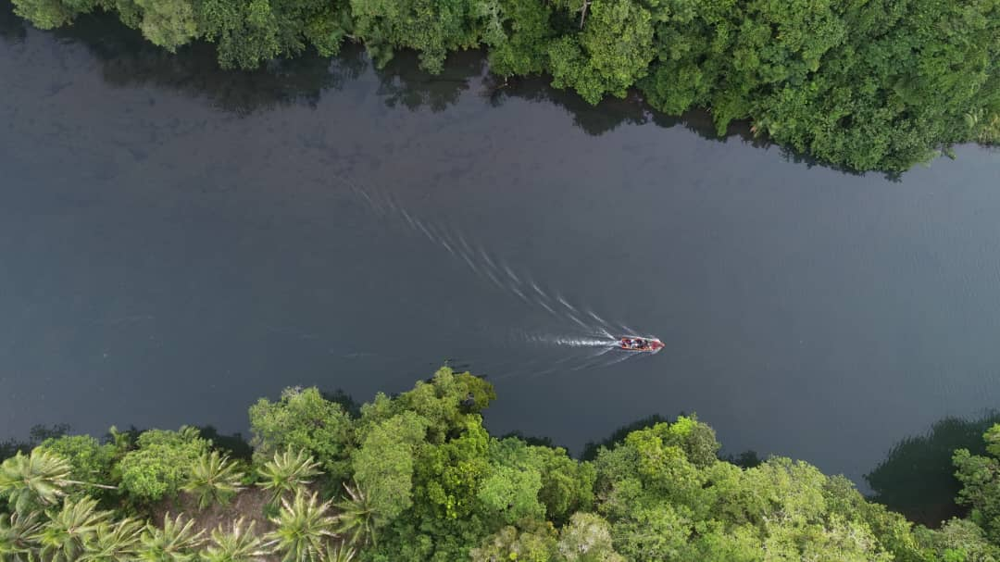

Rainforest Adventures
Guided treks through pristine forest led by local naturalists - spot birds of paradise and hidden waterfalls.
Book a TrekExplore Tavolo's Trails
Experience the Tavolo rainforest on foot with experienced community guides who know every trail, stream, and hidden natural wonder.
Guided Forest Trekking
Tavolo's network of walking trails winds through pristine rainforest landscapes. Our community guides possess intimate knowledge of the forest gained through lifelong residence and traditional ecological expertise. Treks are designed for various fitness levels and time commitments, from morning nature walks to multi-day expeditions.
Trek Options:
- Half-Day Forest Walk (3-4 hours): Gentle pace through lowland forest, ideal for families and those with limited fitness. High probability of spotting birds and small mammals. Includes packed lunch and water.
- Full-Day Rain Forest Trek (6-8 hours): More challenging terrain, deeper forest penetration, visits waterfalls and river pools. Great for photography and serious birdwatching. Includes packed meals and refreshments throughout the day.
- Multi-Day Expedition (2-5 days): Immersive rainforest experience with camping or basic lodging. Follow remote trails to pristine areas rarely visited by tourists. Opportunity to observe wildlife behavior patterns and seasonal ecological cycles.
All treks include: experienced guide, bottled water, trail snacks, first aid kit, and radio communication for safety.


Birdwatching & Ornithology
Tavolo is a global hotspot for birdwatching, home to many endemic species found nowhere else on Earth. The region supports over 250 bird species including the iconic birds of paradise, numerous kingfishers, parrots, and raptors.
Birdwatching Specialties:
- Birds of Paradise: Watch elaborate courtship displays of these remarkable species during breeding seasons. Each species has unique behaviors and plumage patterns.
- Dawn Chorus Walks: Early morning excursions (4:00 AM start) to witness and record the spectacular symphony of forest birds greeting the day
- Canopy Watching: Focus on high-altitude birds using binoculars and spotting scopes. Often requires patient waiting in strategic locations.
- Nightbird Listening: Evening walks to hear and identify nocturnal species including owls and nightjars
Our guides are skilled ornithologists able to identify species by sight and call, and can advise on optimal times for viewing specific birds. Bring quality binoculars and a camera with good zoom capability for best results.
Waterfall & River Swimming
Tavolo's rainforest streams and rivers create stunning cascading waterfalls and deep natural pools - perfect for swimming, bathing, and cooling off after forest trekking. These water features also provide crucial habitat for aquatic wildlife.
Popular Water Destinations:
- Main Cascade Waterfall: A popular destination on half-day treks, featuring a 20-meter drop into a clear pool. Bring swimwear and water shoes.
- Upper Forest Stream: Series of smaller cascades and pools set deep in old-growth forest. Excellent for wildlife viewing and photography.
- River Bathing Pools: Designated safe areas for refreshing dips during long trek days. Water temperature cool year-round.
Guides ensure all water activities are safe and sustainable. Swimming helps connect visitors with rainforest ecosystems at an intimate level while providing relief from the tropical heat.
What You'll See & Experience
Every trek is unique, but you should expect rich biodiversity and memorable wildlife encounters:
- Endemic birds including multiple birds of paradise species
- Tree kangaroos and other arboreal mammals
- Colorful insects including morpho butterflies and tracking beetles
- Medicinal and food plants used by local communities
- Streams, river pools, and water features
- Ancient trees and pristine forest landscape
- Insights into traditional ecological knowledge from guides